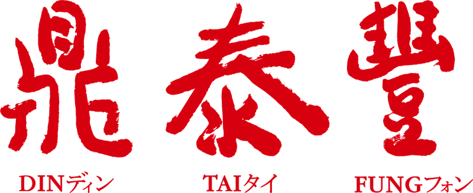

대만 브랜드 13
대만에서 시작한 브랜드 13개를 로고와 함께 모았습니다. 대표적인 대만 브랜드로는 에이수스(ASUS), 에이서(Acer), TSMC, 중화항공(China Airlines), 마이크로-스타 인터내셔널(Micro-Star International), 미디어텍(MediaTek) 등이 있습니다. 수록 기준은 검수된 브랜드 설명이나 공식 웹사이트가 일치하는 위키데이터 개체에서 기원 국가가 확인된 경우로 한정했습니다.
다른 국가 보기
국가별 전체 →산업별로는 기술·전자 6개, 모빌리티 3개, 식음료 2개, 여행·호스피탈리티 1개 순입니다. 설립연도가 확인된 브랜드는 12개이며 가장 오래된 곳은 1959년, 가장 최근은 1997년에 시작했습니다. 시기별로는 1950~1999년 12개입니다. 수록 자료로는 로고 이미지 13개를 갖췄습니다. 이 가운데 12개는 공식 웹사이트가 일치하는 위키데이터 개체로 연결해 두었습니다.
대만 브랜드 목록
 마이크로-스타 인터내셔널Micro-Star International대만 · 1986년
마이크로-스타 인터내셔널Micro-Star International대만 · 1986년마이크로-스타 인터내셔널(Micro-Star International)은 대만 신베이시 중허구에 본사를 둔 다국적 정보 기술 기업이다.
 미디어텍MediaTek대만 · 1997년
미디어텍MediaTek대만 · 1997년미디어텍(MediaTek)은 1997년 설립된 대만의 팹리스 반도체 기업이다.
 기가바이트 테크놀로지Gigabyte Technology대만 · 1986년
기가바이트 테크놀로지Gigabyte Technology대만 · 1986년기가바이트 테크놀로지(Gigabyte Technology)는 대만의 컴퓨터 하드웨어 제조사이자 유통사이다.
 자이언트Giant Bicycles대만 · 1972년
자이언트Giant Bicycles대만 · 1972년자이언트(Giant Bicycles)는 1972년 대만에서 설립된 자전거 설계·제조 기업이다.
 에버그린 해운Evergreen Marine대만 · 1968년
에버그린 해운Evergreen Marine대만 · 1968년에버그린 해운(Evergreen Marine)은 대만 타오위안시 루주구에 본사를 둔 컨테이너 운송·해운 회사이다.
중화항공China Airlines대만 · 1959년중화항공(China Airlines)은 1959년 대만 정부에 의해 설립된 대만의 국적 항공사로, 2011년 9월 27일부터 항공동맹…
 에이수스ASUS대만 · 1989년
에이수스ASUS대만 · 1989년에이수스(ASUS)는 대만 타이베이에 본사를 둔 다국적 컴퓨터·전화 하드웨어·전자제품 제조 기업이다.
 에이서Acer대만 · 1976년
에이서Acer대만 · 1976년에이서(Acer)는 대만 신베이시에 본사를 둔 전자제품 기업이자 다국적 기업이다.
 에바 항공EVA Air대만 · 1989년
에바 항공EVA Air대만 · 1989년에바 항공(EVA Air)은 타오위안 국제공항을 허브로 아시아, 오세아니아, 유럽, 북아메리카 등에 취항하는 대만의 항공사이다.
 만다린 항공Mandarin Airlines대만 · 1991년
만다린 항공Mandarin Airlines대만 · 1991년만다린 항공(Mandarin Airlines)은 대만 타이베이시에 본사를 둔 항공사이다.
 공차Gong Cha대만
공차Gong Cha대만공차(Gong Cha)는 대만에서 시작된 버블티 브랜드의 한국 사업을 운영하는 공차코리아의 브랜드다.

딘타이펑Din Tai Fung대만 · 1991년딘타이펑(Din Tai Fung)은 대만 타이베이에 본사를 둔 중국 요리 전문 레스토랑 체인이다.
TSMC대만 · 1987년TSMC(TSMC)는 파운드리를 주 사업 영역으로 하는 대만의 반도체 제조 기업이다.